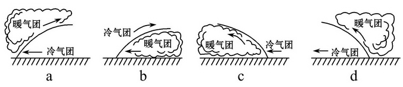
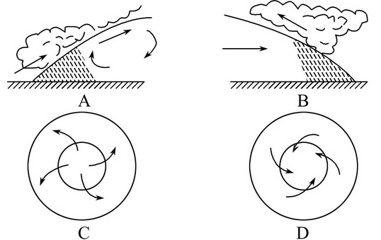
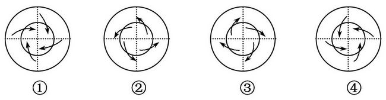
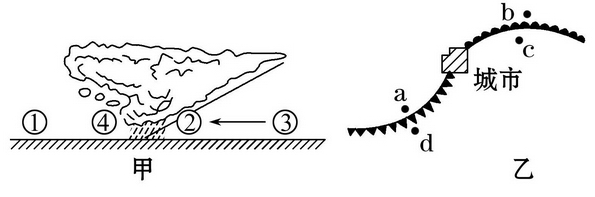
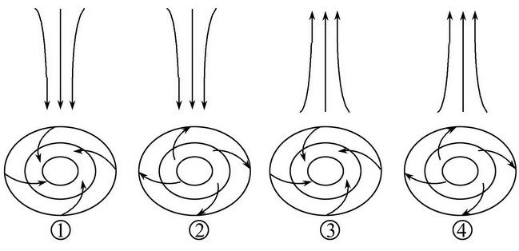
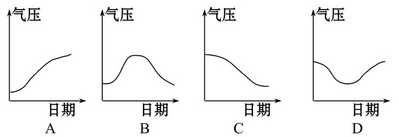
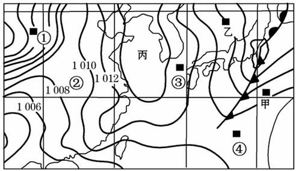

None - Fade - Slide - Convex - Concave - Zoom
选择班级
幻灯片样式
Black (default) -
White -
League -
Sky -
Beige -
Simple
Serif -
Blood -
Night -
Moon -
Solarized
根据下面四幅天气系统图，回答1、2题。
1.上面四幅图中，正确表示冷锋天气的是( )
A. a
B. b
C. c
D. d
2.关于冷锋的叙述，正确的有( )
A.是由冷气团主动移向暖气团形成的锋
B.过境后气温和气压都骤降
C.过境后会有雨雪天气
D.快速移动的冷锋过境时多产生连续性降雨
3.冷锋与暖锋的共同点是( )
A.都形成连续性降水
B.降水都降在锋前
C.都是冷气团在下，暖气团在上
D.都属于气候系统
4.如图表示①地处于北半球的低压区，箭头表示①地的风向。四幅图中风向正确的是( )
A.A
B.B
C.C
D.D
5.下图中，符合南极大陆极地东风、南半球气旋、我国台风、我国江淮地区的伏旱示意图的顺序是( )
A.①②③④
B.②①④③
C.④③②①
D.②④①③
6.读北半球近地面天气系统图(单位：hPa)，回答下列问题。
(1)按气压状况看，①地为[高气压]中心，③地为低气压]中心。
(2)图中②地吹[西北]风。
(3)图中④地的天气状况是[低温晴朗]， 其原因是[冷锋过境后，高压脊控制]。
7.解读图中信息，判断正误。正确的在括号内打“√”，错误的打“×”
(2)从气压状况分析，A表示低压，B表示高压。([×])
(3)从气流状况分析，A表示反气旋，B表示气旋。([√])
(5)从图中可以看出，北半球气旋的东部吹偏北风，反气旋的东部吹偏南风。([×])
读我国P城市12月28日前后相关气象资料图，回答1、2题。
1.P城市( )
A.不可能出现降水天气
B.最有可能出现大风、降温天气
C.最有可能出现晴朗天气，气温上升
D.最有可能出现连续性降水天气
2.P城市12月28日前后的气压变化过程曲线是( )
A.①
B.②
C.③
D.④
3.两图中受暖气团控制的点是( )
A．②④和ab
B．②③和cd
C．①④和ad
D．①④和cd
4.据图判断下列叙述正确的是( )
A．甲图中①地气温最高
B．乙图中的城市天气晴朗
C．甲图中④地未来受暖气团控制
D．乙图中的四地均存在连续性降水
2010年第7 号台风“圆规”于9月1日夜间进入山东省南部海域。台风“狮子山”也影响山东。受其影响，山东半岛东部地区遭遇大到暴雨。结合下图回答5、6题。
5.上图中能正确表示台风“圆规”或“狮子山”的是( )
A.①
B.②
C.③
D.④
6.如果台风“圆规”能从山东日照经过，那么下图中能反映台风“圆规”过境前后，日照气压变化的是( )
A.①
B.②
C.③
D.④
7.(探究性学习)据中央气象台预计，2010年10月9日～12日、12日～15日有两股冷空气先后入侵中国，带来大范围的阴雨(雪)、降温、大风等天气。而在此之前，中东部地区依然是雾气弥漫。读2010年10月10日14时等压线图，回答问题。(20分
(1)乙地气压值为_______百帕( )
A.1 006
B.1 008
C.1 010
D.1 004
(2)此时，①地的风向是( )
A.正北风
B.西北风
C.东南风
D.东北风
(3)此时，①②③④四地中风速最大的是( )
A.①
B.②
C.③
D.④
(4)此时，丙地的天气状况如何？
晴朗
(5)如果暖气团中有充足的水汽，描述未来几天甲地的天气变化过程。
风速先变大后变小；气温持续降低、气压持续升高；先由晴转阴雨，再转晴。